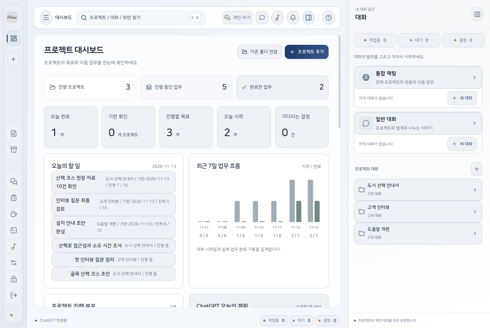

세 범위로 나눈 대화
통합 채팅으로 전체 업무를 살피고, 프로젝트 대화로 실제 작업을 맡기고, 일반 대화로 별개의 질문을 이어가세요. 파일 첨부 / 실행 중 추가 지시 / 분기와 되감기도 대화마다 사용할 수 있습니다.
본인의 ChatGPT 계정으로 조사 / 문서 / 보고를 맡기세요. 대시보드를 보면서 오른쪽 대화함에서 통합 채팅 / 프로젝트 대화 / 일반 대화를 따로 이어갑니다. 왼쪽 메뉴는 마우스를 올리면 펼쳐지고 벗어나면 접힙니다.
Apple Silicon Mac / Windows 64비트
통합 채팅으로 전체 업무를 살피고, 프로젝트 대화로 실제 작업을 맡기고, 일반 대화로 별개의 질문을 이어가세요. 파일 첨부 / 실행 중 추가 지시 / 분기와 되감기도 대화마다 사용할 수 있습니다.
AI가 자료를 읽어 완성한 문서를 저장합니다. HTML 미리보기와 수정, PDF와 편집 가능한 발표자료 변환, 삭제와 복원을 프로젝트에서 이어갑니다.
목표 / 기한 / 그래프로 현황을 보고 ChatGPT에 오늘의 계획을 맡기세요. 중앙 팝업에서 프로젝트 / 기간 / 계정 모델과 생각의 깊이를 고르면 AI가 실제 완료 기록으로 보고와 인계를 작성합니다.
전체 자료를 미리 보고 새 폴더로 옮기세요. 원문과 백업을 보존합니다. 준비한 로컬 음성 서버의 실행을 관리하고 프로젝트 자동 포트표에서 서비스 주소와 충돌을 확인합니다.
사용하는 컴퓨터에 맞는 설치 파일을 선택하세요.
Apple Silicon
M 시리즈 칩 / arm64설치 파일 준비 중 현재 공개 릴리스의 디스크 이미지와 업데이트 파일을 확인합니다.Apple 미공증 버전은 직접 설치하며, 처음 열 때 macOS가 실행을 제한할 수 있습니다.
맥 설치와 첫 실행 안내64비트 PC
Intel / AMD 프로세서 / x64설치 파일 준비 중 공개 릴리스에 설치 파일이 등록되면 받을 수 있습니다.Mac은 앱을 응용 프로그램 폴더로 옮기고, Windows는 설치 프로그램을 실행하세요.
Flowrium의 설정에서 Codex 연결을 누르고 브라우저에서 자신의 계정으로 로그인하세요.
프로젝트 폴더를 연결하고 오른쪽에서 대화 범위를 고르세요. 일반 대화는 프로젝트 없이도 시작하며, 프로젝트에서 진행한 기존 Codex 대화도 골라 가져올 수 있습니다.